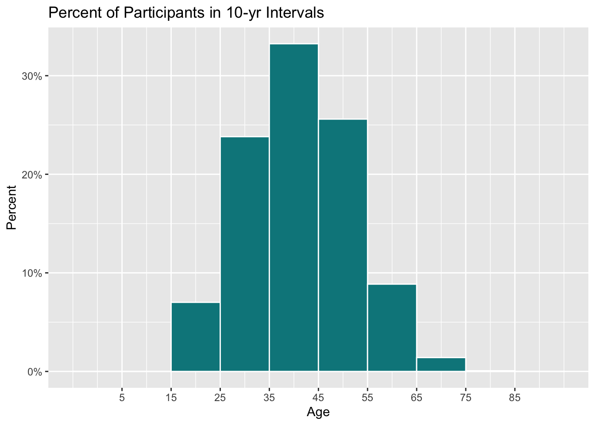
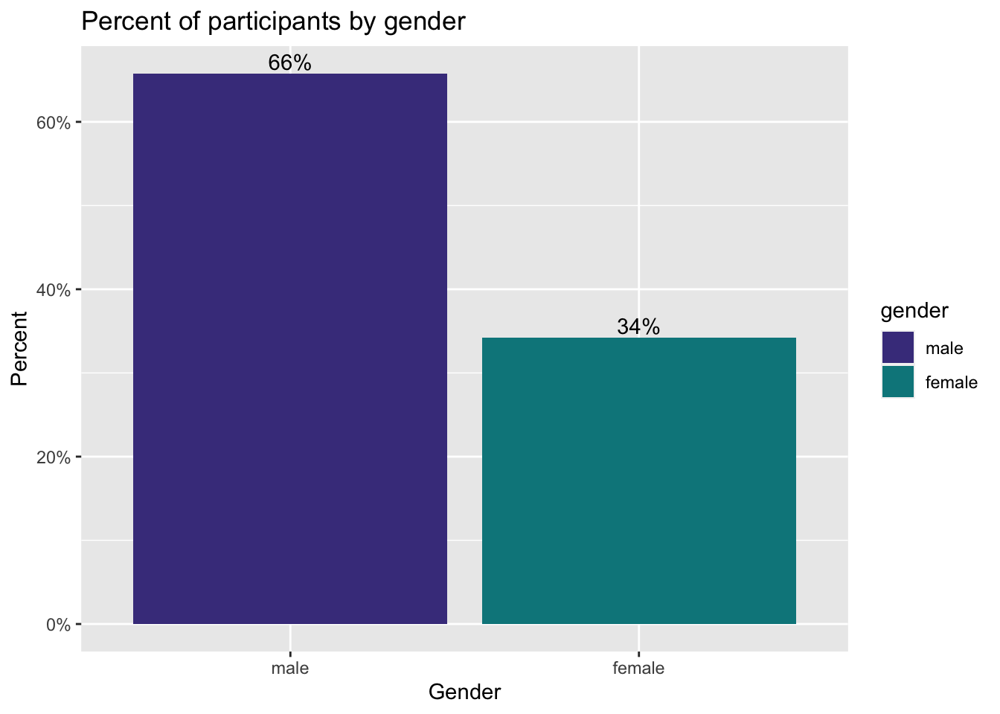

## Prepare Age Data For Plots
boston_df_age =
boston_df %>%
select(age) %>%
drop_na(age)age_plotly =
boston_df_age %>%
count(age) %>%
plot_ly(
x = ~age, y = ~n, color = ~age,
type = "bar", colors = "viridis") %>%
layout(
xaxis = list(title = "Age"),
yaxis = list(title = "Number of Participants"))
age_plotly To create a bar chart of the age distribution for the Boston Marathon from 1900-2019, we began by selecting the age variable and dropping missing age values. Then, we used plotly to create an interactive plot that shows the age and the number of participants at each age year. Additionally, there is an option to hover over each bar within the chart to see the exact age and number of participants at that age.
We notice that the majority of participants in the Boston marathon from 1900-2019 are 35-50 years old, with the most common age being 40. Approximately 21,000 of our 404,727 participants are 40 years old. We also notice that at 5 year age increments, from 40 to 60 years old, ie. 45, 50, 55, there appears to be a higher number of participants compared with the directly surrounding age years.
age_percentage_ggplot =
ggplot(boston_df_age,
aes(x = age,
y = ..count.. / sum(..count..))) +
geom_histogram(fill = "turquoise4",
color = "white",
binwidth = 10) +
labs(title = "Percent of Participants in 10-yr Intervals",
y = "Percent",
x = "Age") +
scale_x_continuous(breaks = seq(5, 85, by = 10)) +
scale_y_continuous(labels = percent)
age_percentage_ggplot
This histogram shows the age distribution of participants in %’s of total participants in 10 year segments. We see that in the age range of 35-45, there is the highest percentage of participants, approximately 33%.
## Prepare Gender Data For Plots
boston_df_gender =
boston_df %>%
select(gender) %>%
mutate(gender = na_if(gender, "U"),
gender = recode(gender, m = "M"),
gender = factor(gender, levels = c("M", "F"), labels = c("male", "female"))) %>%
drop_na(gender) %>%
count(gender)gender_bar_graph = boston_df_gender %>%
mutate(pct = (n / sum(n)),
pctlabel = paste0(round(pct*100), "%")
)
ggplot(gender_bar_graph,
aes(x = reorder(gender, -pct),
y = pct, fill = gender)) +
scale_fill_manual(values=c("darkslateblue","turquoise4")) +
geom_bar(stat = "identity") +
geom_text(aes(label = pctlabel),
vjust = -0.25) +
scale_y_continuous(labels = percent) +
labs(x = "Gender",
y = "Percent",
title = "Percent of participants by gender")
To create a bar chart for gender distribution, we selected the gender variable, dropped missing values, created a new variable to find the percent of the total that lie within each gender category, by computing n/sum(n), then created a variable that converts the pct variable into a percentage to utilize in the plot.
The graph shows that from 1900-2019, approximately 66% of Marathon participants were male and 34% of Marathon runners were female. There is a large discrepancy between genders.
## Prepare Gender Count Change Over Time Data
gender_timeplot_df =
boston_df %>%
select(year, gender) %>%
mutate(gender = na_if(gender, "U"),
gender = recode(gender, m = "M"),
gender = factor(gender, levels = c("M", "F"), labels = c("male", "female"))) %>%
drop_na(gender) %>%
drop_na(year) %>%
group_by(year, gender) %>%
count()gender_timeplot =
ggplot(gender_timeplot_df, aes(x = year, y = n)) +
geom_line(aes(color = gender), size = 1) + xlim(1900, 2019) +
scale_color_manual(values=c("darkslateblue","turquoise4")) +
labs(x = "Year",
y = "Participants",
title = "Number of participants over time by gender")
ggplotly(gender_timeplot)We may wonder if the number of participants in each category has changed over time, and if so by how much? To determine how the distribution of male and female participants has changed over time. We grouped by year and gender, then used counts to determine the number of participants at each year for each gender. Using plotly, you can hover over to see each year, number of participants, and the gender.
The plot reveals that female participation did not begin until ~1972, while male participation began in 1900 - according to our dataset. While there has been an increase in female runners, there is still approximately a ~2,500 participant discrepancy between gender participation. Also of interest is that the graph shows that in 1996, there was a steep increase in participants among both males and females, and this is likely because this was the 100th anniversary of the race.
## Prepare Country Data Over Time for Plot
country_overtime_df =
boston_df %>%
select(country_residence, year) %>%
drop_na(country_residence) %>%
group_by(year, country_residence) %>%
count() %>%
filter(n > 200)countries_plot =
ggplot(country_overtime_df, aes(x = year, y = n)) +
geom_line(aes(color = country_residence), size = 1) + labs(x = "Year",
y = "Number of Participants",
title = "Number of Participants over Time by Country") + theme(legend.position = "bottom")
ggplotly(countries_plot)Then, we assessed which countries Marathon participants reside in, specifically and how the distribution of these has changed over time. To do this, we first cleaned the data by grouping by country and year variables, and then finding the counts based on this grouping. We filtered to the most popular countries by only including those with 200 participants each year, as numerous countries were represented in our dataset.
The plot shows that there a significantly more U.S. participants than other countries, although the number of participants from the U.S. appears to be decreasing from 2015 to 2016. The second most popular country is Canada, which also appears to be decreasing over time.
country_overtime_df2 =
country_overtime_df %>%
filter(country_residence != "United States")countries_plot2 =
ggplot(country_overtime_df2, aes(x = year, y = n)) +
geom_line(aes(color = country_residence), size = 1) + labs(x = "Year",
y = "Number of Participants",
title = "Number of Participants over Time by Country") + theme(legend.position = "bottom")
ggplotly(countries_plot2)## Prepare Country Participation Over Time Data for Plots
country_counts_df =
boston_df %>%
select(country_residence) %>%
drop_na(country_residence) %>%
group_by(country_residence) %>%
count() %>%
filter(n > 500) popular_country_US =
country_counts_df %>%
plot_ly(
x = ~country_residence, y = ~n, color = ~country_residence,
type = "bar", colors = "viridis") %>%
layout(
xaxis = list(title = "Country"),
yaxis = list(title = "Number of Participants"))
popular_country_USpopular_country_noUS =
country_counts_df %>%
filter(country_residence != "United States") %>%
plot_ly(
x = ~country_residence, y = ~n, color = ~country_residence,
type = "bar", colors = "viridis") %>%
layout(
xaxis = list(title = "Country"),
yaxis = list(title = "Number of Participants"))
popular_country_noUSpopular_country_others =
country_counts_df %>%
filter(country_residence != "United States") %>%
filter(country_residence != "Canada") %>%
plot_ly(
x = ~country_residence, y = ~n, color = ~country_residence,
type = "bar", colors = "viridis") %>%
layout(
xaxis = list(title = "Country"),
yaxis = list(title = "Number of Participants"))
popular_country_othersTo look at overall participation across countries, we first cleaned by finding the count of each country among participants. We focused on countries with greater than 500 participants from 1900-2019 in the Marathon. We then created plots to assess the most popular countries, and then excluded the U.S., then excluded Canada to see a full picture of where participants are from.
The plot reveals, unsurprisingly, that a majority of marathon particpants are from the U.S., and many are from Canada as well. After that, there are many countries which have similar levels of participation. We may wonder whether participation is likely associated with distance from country, and those countries that are more likely to participate are closer in proximity. The plot shows, though, that there are many participants from countries very far away, such as Australia and China.